Simple on a busy day
Designed for owners and staff between customers, not for an implementation team. Clock in by saying “start my shift”, and keep today’s orders on the TV.
![Worklynq — Intelligence Behind Every Operation]()
Worklynq is built to bring your teams, operations, documents, enterprise tools, and AI into one connected intelligent platform, helping you run your business with shared context, connected intelligence, and AI-powered execution.
So your teams spend less time searching, coordinating, and managing information—and more time moving the business forward.
Watch a day on Worklynq2 min
What Worklynq does
Worklynq isn’t a POS, accounting software or a CRM. It connects to the ones you have and keeps track of everything in between: the repairs, checklists, orders, crews and follow-ups that live in group chats and on paper today.
 “What’s broken, late, or not done yet?”
Every task, request and check across your stores, job sites and client projects, with your sales and books right next to it.
“What’s broken, late, or not done yet?”
Every task, request and check across your stores, job sites and client projects, with your sales and books right next to it.
See it for your kind of business
Every store’s day in one place, from the opening checklist to the closing count.
“Did anyone call about the walk-in cooler?”
Maintenance DC-14 is with Tom. The technician comes at 2 PM.
“Are we running low on oat milk?”
Inventory 6 cartons left at Downtown. It’s on Thursday’s order list.
“Who’s opening tomorrow?”
Shifts Priya at 6:30 AM, then Sam at 7. Everyone sees their next shift.
“Orders are running late and the kitchen doesn’t know.”
Order Tracking Square orders on one board. Late ones turn red on the kitchen TV.
“Did Riverside close properly last night?”
Checklists Closing checklist done at 10:42 PM, fridge temperatures logged.
“Can someone turn this chat into a ticket?”
Chat Pick the messages, then Make ticket. The conversation comes with it.
Every job’s RFIs, change orders, punch items and inspections, tracked to done.
“Which RFIs are still waiting on an answer?”
RFIs 3 on Maple Street. MPL-21, the window header size, is 2 days overdue with the architect.
“Did the client sign off on the pantry wall?”
Change orders Yes. MPL-34, $2,450, approved by Dana Ruiz on Monday.
“Log a punch item: the cabinet door in unit 2 won’t close.”
Punch lists Created MPL-41 under Final walkthrough and assigned it to Luis.
“Did the framing inspection pass?”
Inspections Passed Tuesday at 10:40 AM. The inspector’s notes and 6 photos are on MPL-18.
“How’s the Maple Street job doing?”
Projects 68% done, 2 tickets overdue. Drywall is next, due Friday.
“Who agreed to move the concrete pour?”
Chat Sam, in #maple-street on Oct 22: Thursday at 7 AM. It’s on MPL-29 now.
Every client project with goals, a plan, and a dashboard that shows how it’s going.
“Where are we on the Acme relaunch?”
Projects 64% done. Design is signed off, 2 tickets are overdue, and Content is due Friday.
“Plan a 6-week onboarding project for Northwind.”
Assist Drafted 5 milestones and 14 deliverables, from kickoff Nov 16 to go-live Dec 24. Start it?
“Who’s overloaded this week?”
Dashboards Jess has 11 open tickets, 4 due this week. Omar has 3, so he could take the blog posts.
“How many hours have we put into Acme so far?”
Time logging 86.5 hours across 41 tickets, 12 of them this week.
“Did Acme approve the homepage design?”
Approvals Yes. Kim Patel approved it on Nov 3, with one note about the hero image.
“How do we onboard a new client again?”
Knowledge Library Your Client onboarding playbook has 7 steps. First: send the kickoff questionnaire.
Keep the tools you have. Worklynq connects to Square, QuickBooks and more. Anything else, just ask Assist.
Watch it in action
Two cafés, an owner, two shift leads and a small crew. From the morning brief to closing, see how the work gets done, in about two minutes.
Short tutorials to get you going
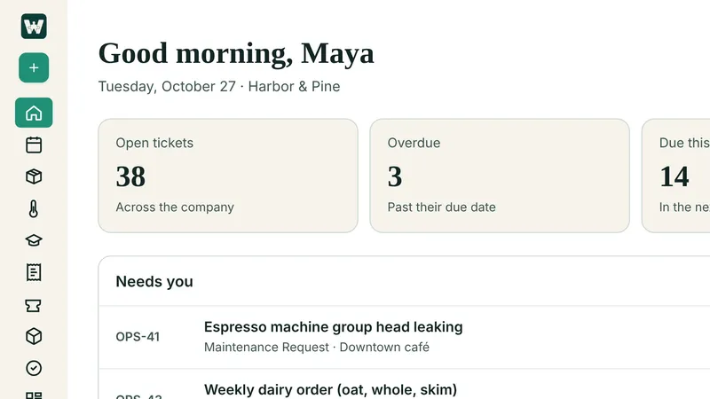
2:10Your first look at Worklynq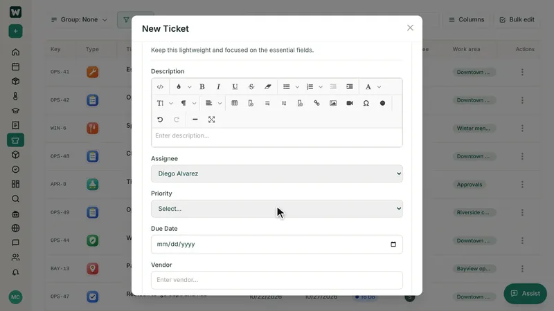
1:56Working with tickets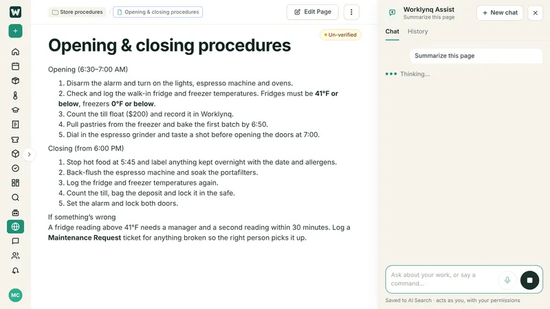
1:39Getting more out of AssistWe're inviting a small group of businesses to run real work on Worklynq before general availability — and to help shape what it becomes.
Who we build for
Most business software is built for big companies with IT teams and big budgets. The businesses people rely on every day get left with spreadsheets, sticky notes, and a dozen apps that don't talk to each other.
The local shop owner, the family restaurant, the contractor running jobs from a truck — they deal with the same scattered information, with fewer people to absorb it. Worklynq is being built for them first.

Designed for owners and staff between customers, not for an implementation team. Clock in by saying “start my shift”, and keep today’s orders on the TV.
Staff, schedules, customers, orders, vendors, and cash in one place — not just tickets and code.
Ask Assist on any page — by typing or talking — and it finds the information, keeps track, and follows up. You stay in charge of the decisions.
Business operations, project management, customer experience management, and product management are built into Worklynq — one workspace, sharing the same people, data, and context.

Day-to-day operations sized for franchise restaurants, independent shops, and other brick-and-mortar businesses — without enterprise cost or complexity.

Customers, engagements, projects, people, work, time, knowledge, and financials in one place — connected instead of scattered across separate tools.

Every customer, conversation, and follow-up in one place — from the regular at your counter to your biggest account — with AI that remembers the details for you.

Connects knowledge to execution, so product teams keep the reasoning behind every ticket, roadmap, and decision.
A look inside
Create your workspace, set it up for your industry, and every morning your team opens Home: what needs them, what's overdue, and how each project or location is doing.
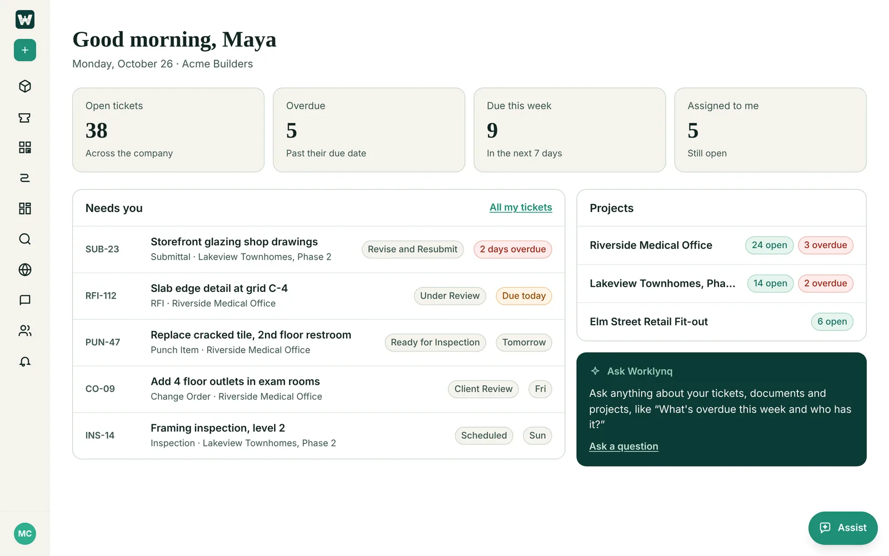
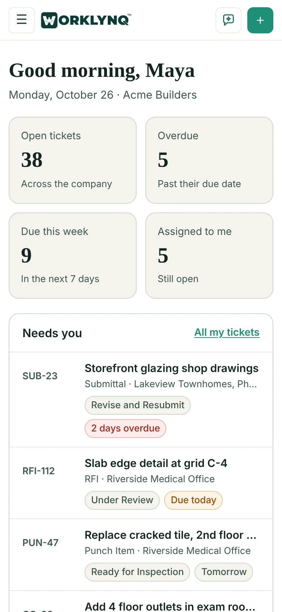
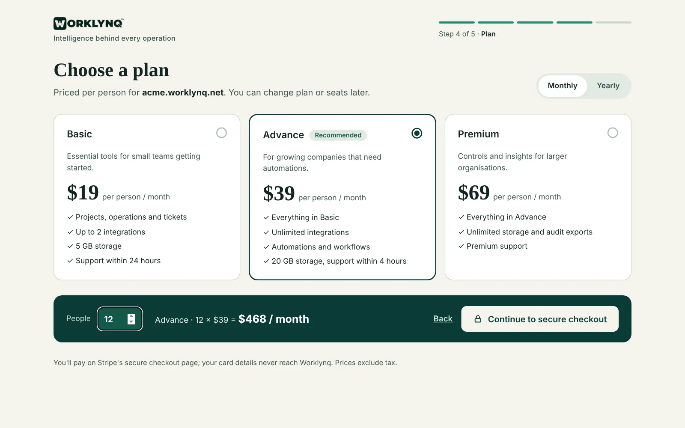
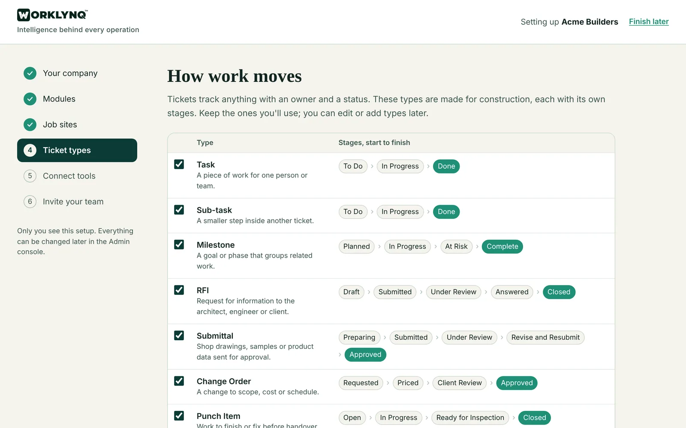
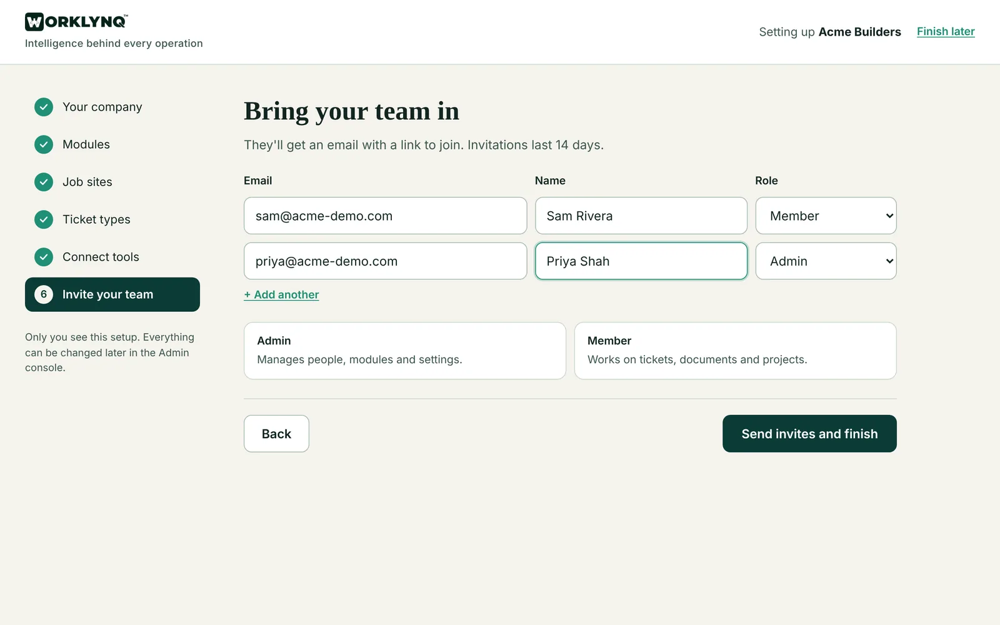
Orders, schedules, the counter TV, and AI that knows your work — here’s a café group’s Tuesday morning.
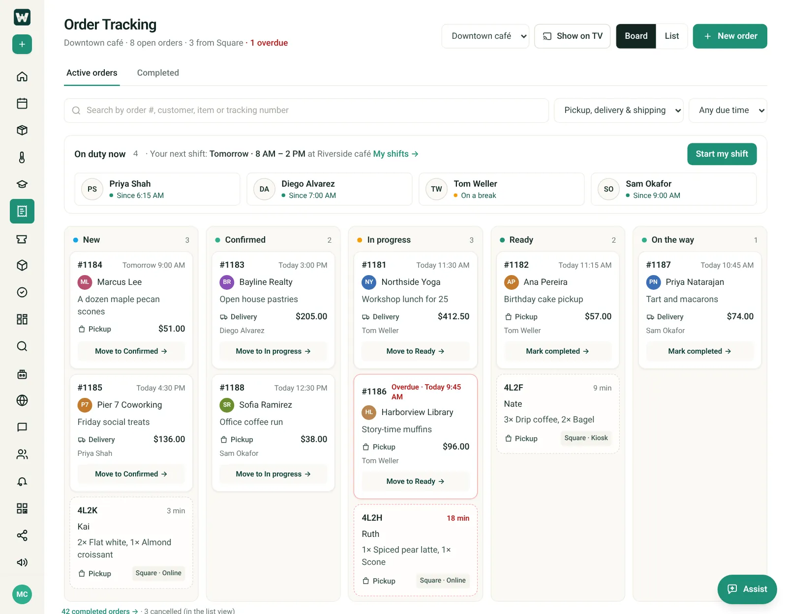
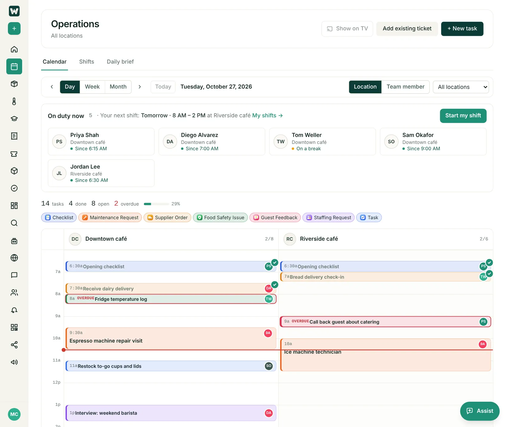
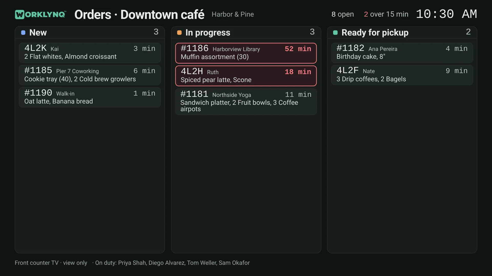
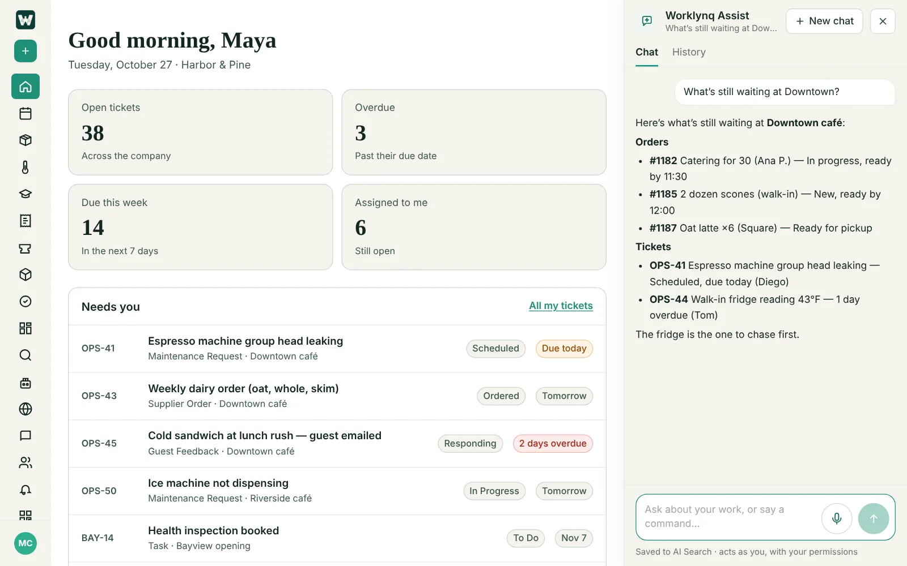
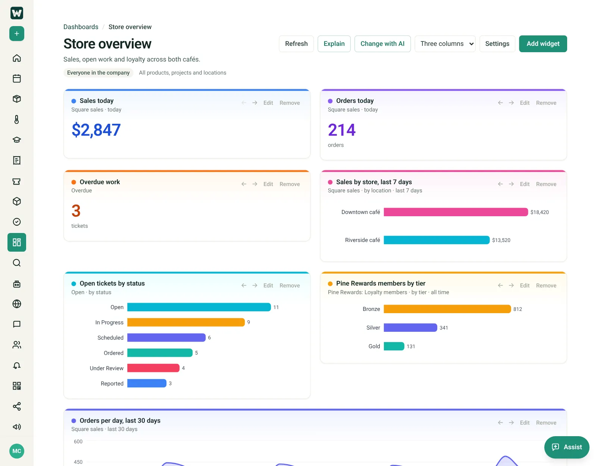
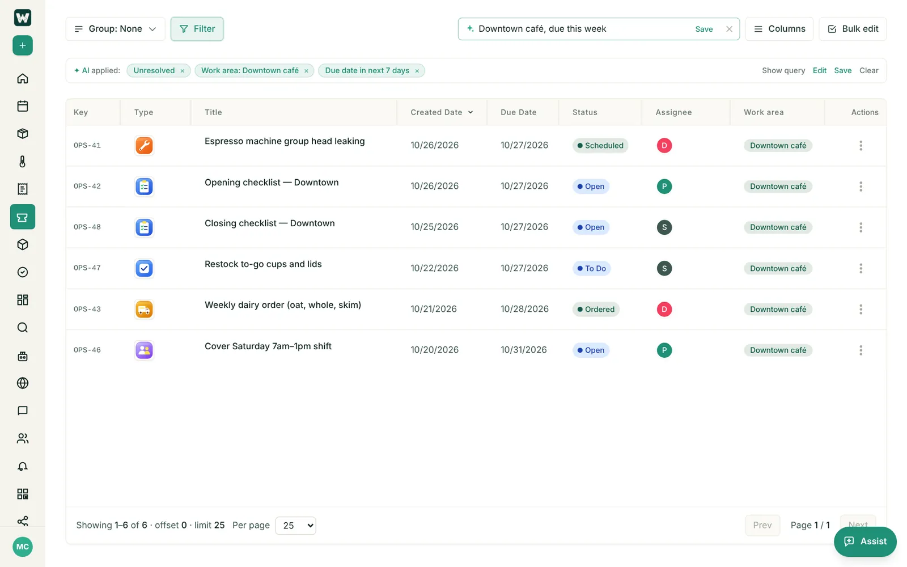
Step-by-step with every screen: Getting started · See more in the docs
Explore Worklynq
Assist, modules, integrations and the foundation underneath, each on its own page.
Ask about your business, have it do the busywork, or start your shift by voice.
Explore →Turn on what your kind of business needs, plus Customer Experience for every customer.
Explore →Square, QuickBooks, Google, Meta, GitHub, Claude and more, with what each one does for you.
Explore →One intelligence foundation underneath every part of Worklynq.
Explore →Request a demo
Tell us a little about your business and we'll walk you through how Worklynq brings your projects, operations, products, and customers together in one place.
We'll be in touch within one business day to set up your demo.
It takes less than a minute.